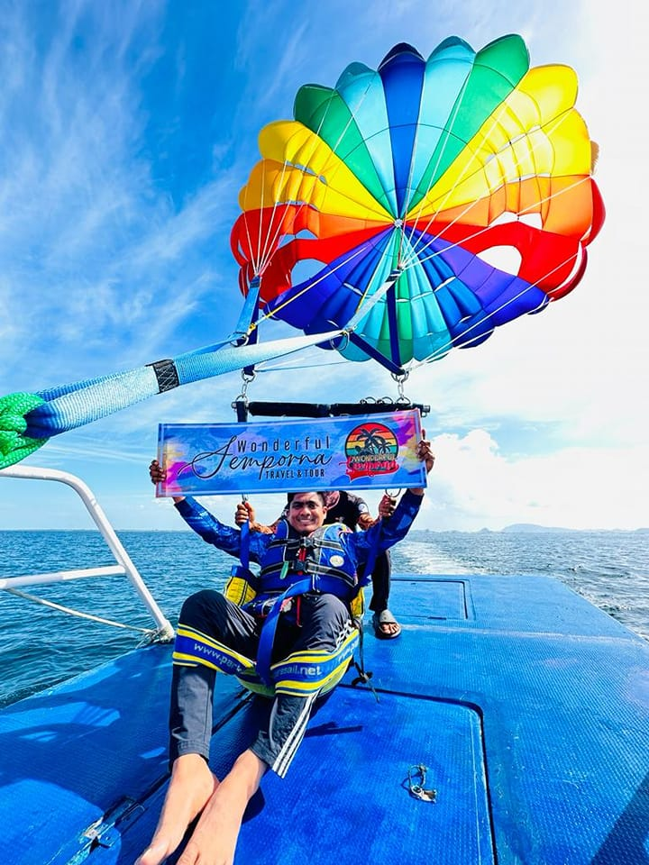
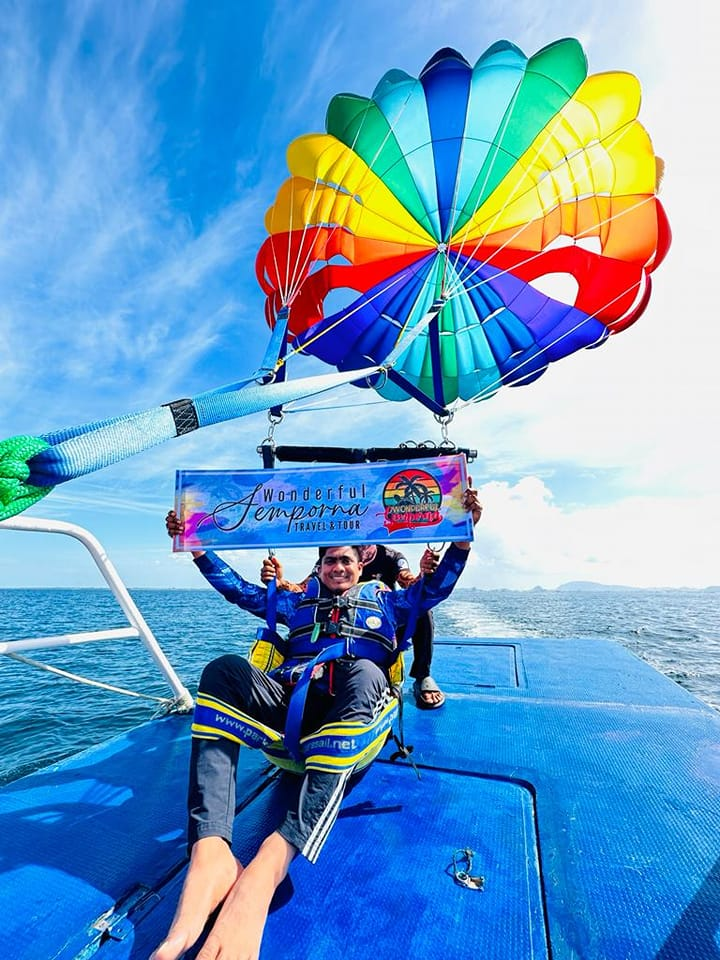

Absolutely this is a good trip for children of all ages. We have found however that children over the age of 8 seem to enjoy it more overall (And parents especially enjoy it more if their children are all over 8). A common concern we get from parents is that their children will be bored stuck on a boat for hours at a time.Surprisingly we deal with very few bored children of any age. The areas we are snorkeling or hiking through are some of the most beautiful in the world, and you never know what you might see around any corner which is a lot island. Not to mention the sea which keep things very interesting. Each boat also comes equipped with a safety guide
We will provide all necessary equipment. This include safety vest and bottle of water for the client trip, for a snorkeling we will also provide a snorkeling mask.For Scuba diving we will provide wet suit, regulator, Fins, BCD Inflator and Deflator, an oxygen tank. Also we will provide lunch along the way when we stop at Matabuan island unless you hungry then suggest bring your own snacks to consume on the trip.
Couple of pair of ¾ pants or shorts, 4 t-shirts or tops, Smartish skirt / pants and top that can mix with the others but can dress up if needed, 2 pairs of swimmers (bikini/costume etc), a sarong, 3-4 pairs of undies, 2-3 pairs of socks, 1 pair of sensible shoes or good trainers (usually fly in mine), 1 pair of thongs / flip flops, sunglasses, sun hat, 1 pair of sandals or smart shoes. No makeup, just a lipstick. Anti-bug plug, really good insect repellant, good high factor suncreame aftersun / moistureiser, few tum, headache or simple firstaid remedies, any required medication, a good hair conditioner, don't worry about other hair products / curling tongs / straigtheners as your hair will do what it wants in the heat / humidity, a good anti-perspirant, toothbrush and toothpaste. More importantly bring your own waterproof digital camera that can go underwater. It will be many great experience to capture! for your trip, Have fun.
If you have specific dates you need, we recommend booking 3 months in advance. If you can be more flexible 2 months in advance is usually sufficient.